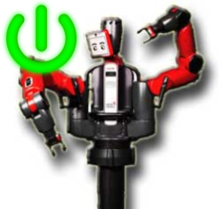
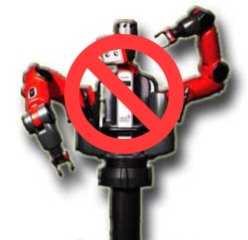
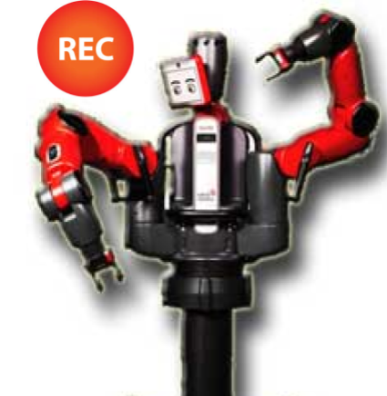
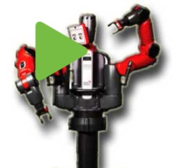

You must be an inducted Baxter user to use this page --- refer to mobile Baxter safe work instruction as a condition of use
Operator checklist:
Switch on the remote control. Set left stick to "enable". Set switch on top left to "computer". Ensure charging cord is not connected! Touch is under investigation.
| Mode: |
Torso:
|  |  |  |  | ||
| Motors on | Motors off | Record | Play | Untuck | Tuck |
Click on the microphone icon and begin speaking for as long as you like.